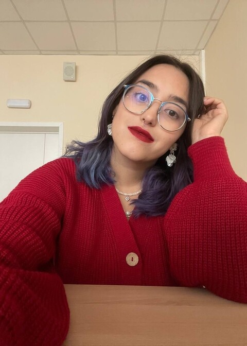
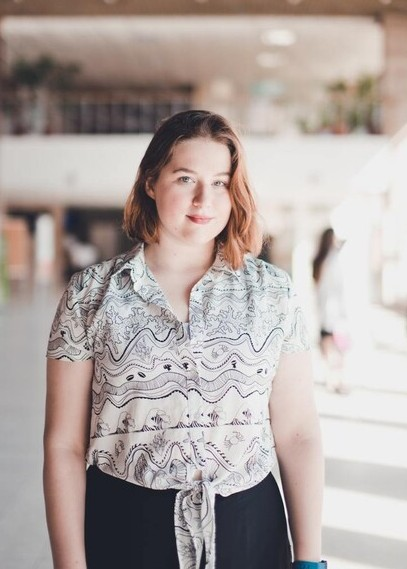
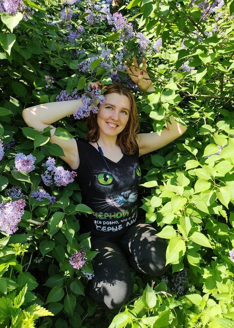

ЧТО МЫ ТАКОЕ
«Лес» — это многопрофильная летняя школа для подростков, которая проводится в формате полевого лагеря.
Мы создаём среду, в которой школьник сможет сам понять, что ему интересно, и включиться в сообщество единомышленников, которые получают удовольствие от того, чем они занимаются. Мы не готовим к олимпиадам и экзаменам, не натаскиваем на конкретные задачи. Наша цель — научить школьников получать удовольствие от учебы и достигать поставленных перед собой целей.
«Лес» — это 4 отделения с разными профилями:
Гуманитарии
Гуманитарное отделение набирает школьников, заинтересованных филологией, лингвистикой, искусством, антропологией, историей и музыкой. Также отделение проведёт курсы о языках, истории и культуре Армении.
Физики
Физическое отделение расскажет об электронике, астрономии, ядерной физике, волновой оптике, программировании и многом другом, а также научит своих подопечных паять и работать с микросхемами.
Математики
Математическое отделении познакомит школьников с разделами “нешкольной” математики: теорий чисел, топологией, анализом, алгоритмами, логикой, — и поможет разобраться в переплетении этих тем.
Биологи
Биологическое отделение рассказывает не только о школьных разделах биологии — ботанике, зоологии, анатомии и физиологии человека — но также и о медицине, психологии и современных биотехнологиях.
Каждый школьник поступает на конкретное отделение, но это не мешает посещать абсолютно любые курсы, которые читаются на школе.
Наши лекторы и преподаватели — студенты, выпускники и сотрудники ведущих вузов России и Европы, популяризаторы науки. Это профессионалы, увлечённые своим делом и стремящиеся заинтересовать им школьников.
Вот некоторые из них:

Всеволод Ландер
Директор школы
Астрофизик, популяризатор астрономии, сотрудник МГУ, астроном-наблюдатель Кавказской Горной Обсерватории
Алиса Мосолова
Руководитель гуманитарного отделения
Выпускница ФиПЛ РГГУ, наставник в Фоксфорде, координатор факультатива по лингвистике при РГГУ и МЦНМО

Дария Триана-Ривера
Руководитель физического отделения
Выпускница РАНХиГС и РГГУ, медицинский и научный журналист, психолог

Ирина Бородина
Руководитель биологического отделения
Руководитель биологического отделения, врач-биофизик (РНИМУ им.Н.И.Пирогова), научный сотрудник ФХМ ФМБА

Ярик Ребенко
Руководитель математического отделения
Выпускник факультета компьютерных наук НИУ ВШЭ, программист, популяризатор математики
Ксения Матова
Руководитель тьюторской службы
Психолог, выпускница факультета психологии МГУ им. М. В. Ломоносова, работает с СДВГ, депрессией и выгоранием

Евгений Ломов
Выпускник магистратуры Центра квантовых технологий МГУ, физик-оптик, системный программист, специалист по квантовым вычислениям и компиляторным технологиям

Нияз Киреев
Лингвист, студент École normale supérieure в Париже, лауреат премии им. Чарльза Таунсэнда, преподаватель Сириуса, ЛЛШ и других школ

Иван Яковлев
Выпускник математического факультета НИУ ВШЭ, администратор телеграм-канала «Кроссворд Тьюринга», преподавал в НМУ, ЛШСМ, на MIT Yulia's Dream, в 57-й и 179-й школах

Полина Романова
Выпускница совместного бакалавриата факультета математики ВШЭ и ЦПМ, работала ассистентом по спецматематике в школе 179, популяризатор математики

Анастасия Калугина
Выпускница биологического факультета МГУ, зоолог позвоночных, учитель высшей категории, преподаёт в профильных биологических классах
Кроме того, на школе есть сотрудники-психологи, которые позаботятся о комфорте взрослых и детей на школе, а также расскажут о психологии и коммуникации и проведут интересные групповые занятия и тренинги.
В 2025 году стоимость участия в школе составляет 350 000 драм (≈870$/76400₽).
При подаче заявки заранее, можно получить скидку*:
При подаче заявки до 31 марта стоимость участия составляет 280 000 драм (≈715$/61100₽, скидка 20%)
При подаче заявки до 30 апреля стоимость участия составляет 300 000 драм (≈765$/65500₽, скидка 14%)
При подаче заявки до 31 мая стоимость участия составляет 320 000 драм (≈817$/69800₽, скидка 9%)
*Сумма скидки зависит от даты подписания договора.
В стоимость школы входит:
- Посещение любого количества учебных занятий и участие во внеурочной деятельности
- Тьюторское сопровождение
- Участие в дополнительных активностях: тир, прогулки по горам, посещение армянской фермы
- Трёхразовое питание
- Проживание на территории кемпинга
- Сопровождение при авиаперелете для тех, кто летит из Москвы
- Трансфер из аэропортов Еревана или Гюмри на место проведения школы
В стоимость школы НЕ входит:
- Авиабилеты
- Дополнительные экскурсии по достопримечательностям региона
- Палатка, спальник, пенка
(мы просим участников школы брать их с собой, но, если такой возможности нет, постараемся помочь с этим)
КАК ПОПАСТЬ В "ЛЕС"
В 2025 году школа набирает подростков 14-18 лет. Подать заявку могут школьники из любой страны мира, но учитывайте, что школа проходит на русском языке. Чтобы стать участником школы “Лес” и поехать с нами в Армению, необходимо пройти собеседование. На собеседовании мы оцениваем, насколько школьнику будет комфортно на школе и подойдет ли ему наша учебная программа. Чтобы подать заявку на участие в школе, заполните форму по ссылке:
ХОЧУ В "ЛЕС"!
После заполнения формы с вами свяжется координатор набора, который ответит на все вопросы, подробнее расскажет о школе и о том, как проходит отбор.
Если у вас остались вопросы, задайте их нам в телеграме или напишите нам на почту: admin@gws.forest-school.am

"ЛЕС" в соцсетях